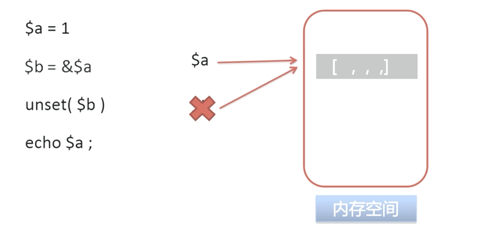
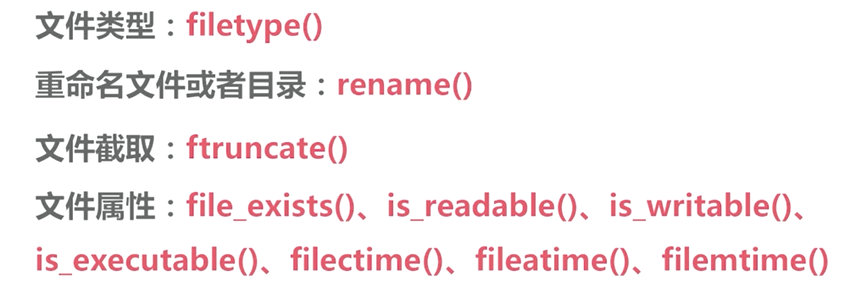

原文连接:https://www.cnblogs.com/dashucoding/p/10792606.html
php基础知识，JavaScript，jQuery，ajax基础知识
linux基础知识，mysql数据库的基础与优化
程序设计，PHP框架基础知识，算法，逻辑思维，高并发
PHP基础知识
引用变量，常量以及数据类型，运算符以及流程控制，自定义函数以及内部函数，正则表达式
文件以及目录处理，会话控制，面向对象，网络协议，开发坏境等。
PHP技术栈：
javascript, jquery, 以及 ajax基础
linux基础知识
mysql数据库基础
程序设计
php框架基础知识
mysql基础知识：
mysql知识知识，如何创建高性能的索引考察点，sql语句编写和优化，mysql的高可扩展和高可用以及安全性考察点。
常见算法，逻辑思维：
常见数据结构特征，算法的工作原理，时间复杂度，空间复杂度，其他逻辑算法，PHP内置函数实现。
高并发解决方案：
如何理解高并发：pv, uv, qps
优化时机，qps阶段优化
优化方案
防盗链，减少http请求，浏览器缓存，cdn，数据库缓存，mysql的读写分离，分区以及分库分表，lvs负载均衡
如今，你要掌握，PHP基本语法，JavaScript基本语法，jQuery基本语法，ajax基本操作，网络基础，mysql基础知识，linux基础操作知识。
什么是引用变量？在PHP中，用什么符号定义引用变量？
写出jQuery中，可以处理ajax的几种方法？
写出尽可能多的Linux命令。
写出三个以上mysql数据库存储引擎的名称。
编写一个在线留言本，实现用户的在线留言功能。
mvc知识，和几种流行的mvc框架
请写出常见的排序算法
如何解决网站大流量和高并发的问题
引用变量
什么是引用变量，在PHP当中，用什么符号定义引用变量？
PHP的引用变量的概念和定义方式。
PHP引用变量的工作原理。
概念：引用变量
在PHP中引用意味着用不同的名字访问一个变量的内容。
定义方式：
使用&符号
引用变量的工作原理：
$a = 1;
$b = $a;
用到了引用
用引用

字符串可以使用哪种定义方法以及各自的区别是？
字符串的定义方式：


会话控制技术
简述一下cookie和session的区别以及各自工作机制，存储位置等，简述cookie的优缺点。
为什么要使用会话控制技术？
cookie文件，存储在客户端的。
setcookie($name, $value, $expire, $path, $domain, $secure);cookie的操作，优点，和缺点

https的工作原理：

结言
好了，欢迎在留言区留言，与大家分享你的经验和心得。
感谢你学习今天的内容，如果你觉得这篇文章对你有帮助的话，也欢迎把它分享给更多的朋友，感谢。
感谢！承蒙关照！您真诚的赞赏是我前进的最大动力！